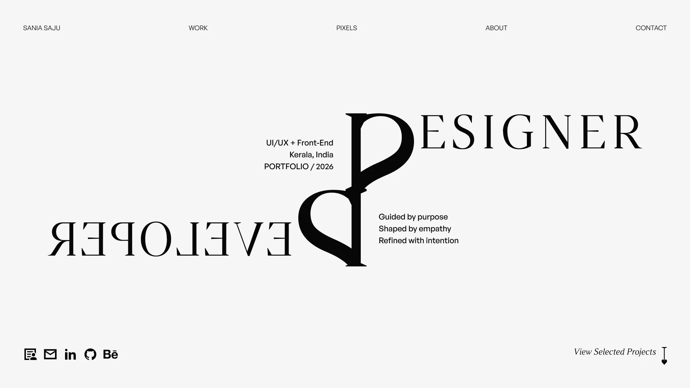
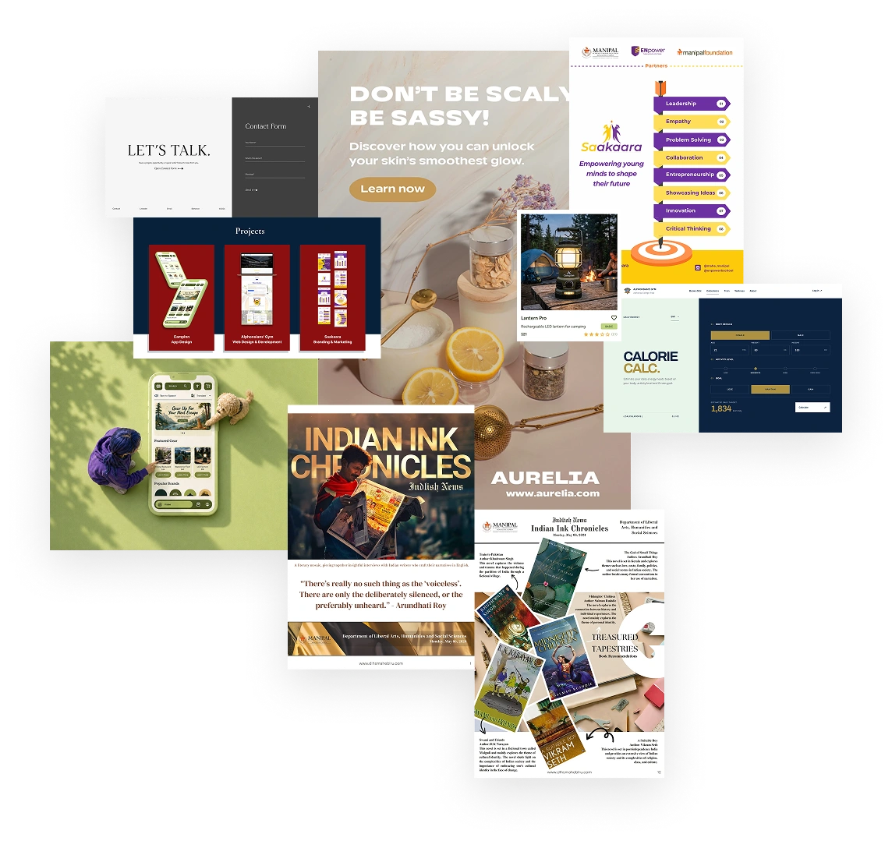
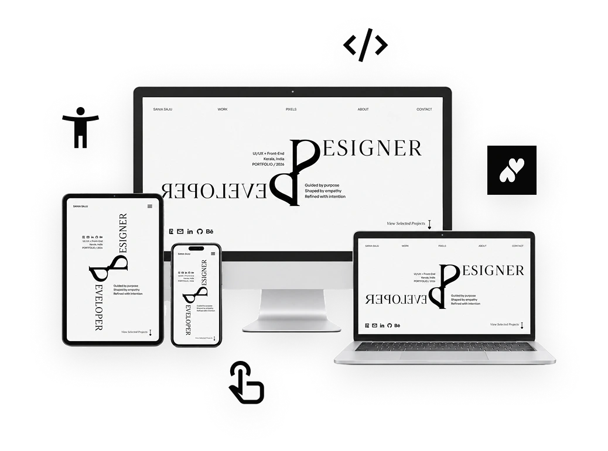
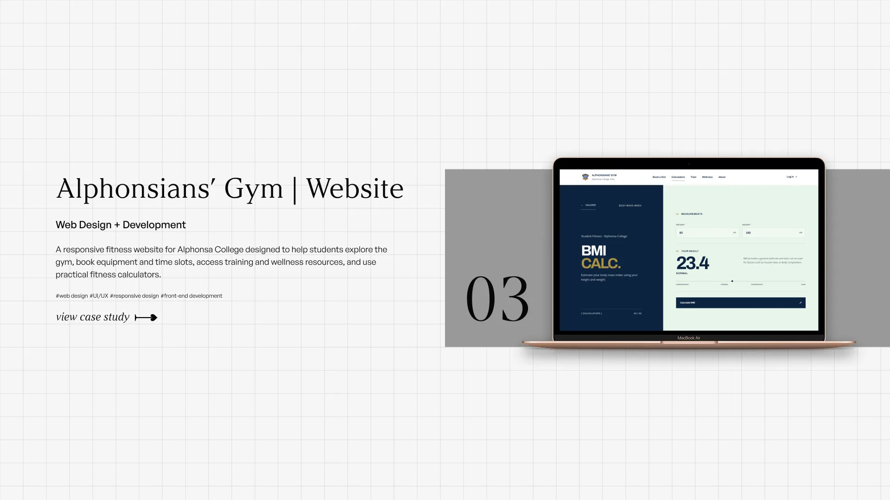
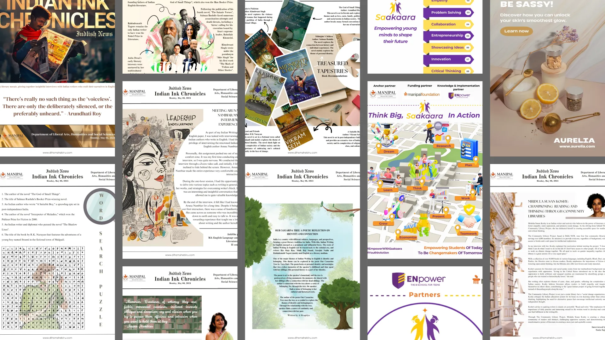
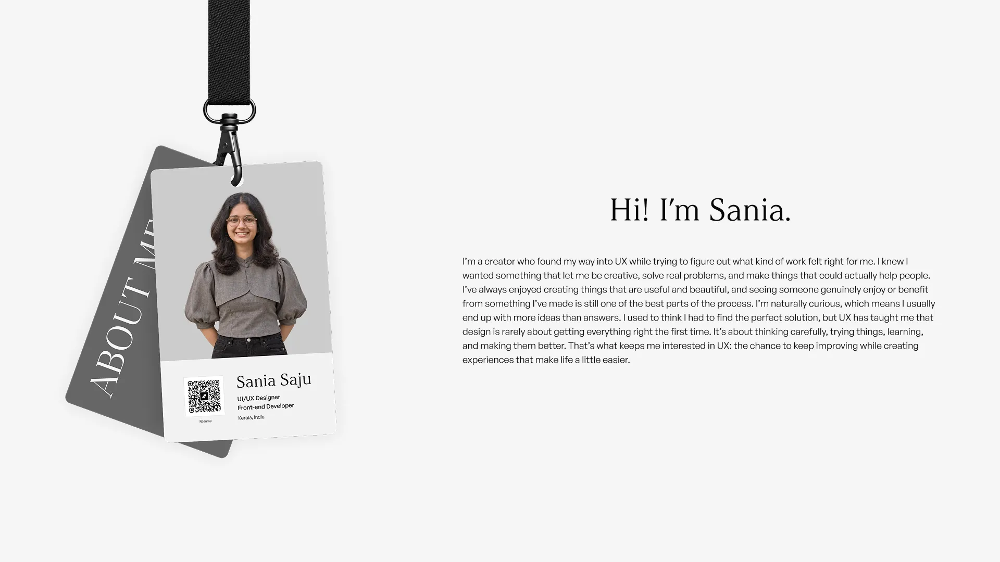
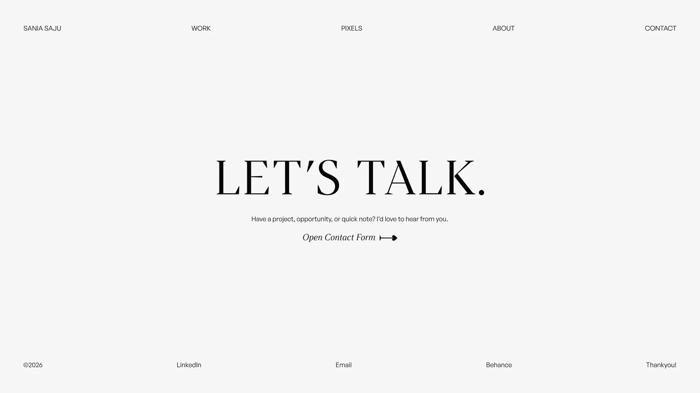
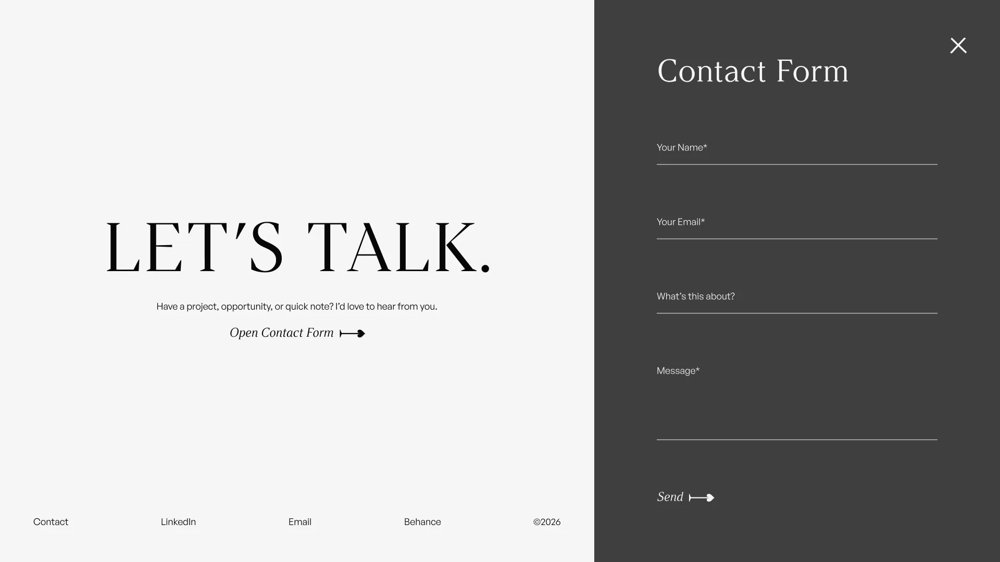

Internal: the system.
The thinking, principles, positioning, and decisions that define the brand from within.

Designing a portfolio that reflects how I think and build.
A personal portfolio designed to communicate who I am as a designer and developer, and how I approach designing and building digital products.
I needed a portfolio that could explain how I approach design, connect projects from different parts of my background, and make the direction I am growing toward feel intentional.
The project, therefore, became a combination of personal branding, UX strategy, interaction design, visual systems, and front-end development. The website itself needed to demonstrate the same qualities I want my work to communicate: clarity, thoughtfulness, restraint, accessibility, and attention to detail.
My background includes branding, content strategy, research, front-end development, and UX design. Presenting everything as equally important could easily feel irrelevant and chaotic, so the challenge was to choose relevant content and present it cohesively.


I designed my portfolio into a coherent story that communicates to the target audience what I did before, what I can do now and where I am heading rather than a folder for all of my work. Every decision, including the structurisation, wording, interaction, and coding arrangement, supports the same idea: I am an intentional designer who primarily focuses on usability, accessibility, brand identity, and implementation.
Before designing the portfolio, I designed the system behind the brand.
The first step in defining my personal brand was to understand what it was and how that should eventually be translated into something people could experience.
I structured the personal brand across three layers:
The thinking, principles, positioning, and decisions that define the brand from within.
The point where those internal decisions are translated into a recognisable identity.
The tangible outputs through which other people encounter the brand.
This structure helped me move from abstract ideas about who I am as a designer to a portfolio that could consistently express those ideas.
The homepage works as one continuous introduction.





This structure keeps the homepage clear while providing deeper insights where necessary.
Editorial, restrained, and structured adequately to let the work speak.
The visual direction was intentionally simple and relied on typography, proportion, spacing, imagery, and movement to align with the brand identity.
Typography
High-contrast editorial headings paired with a clean sans-serif for body copy and metadata.
Colour
A monochromatic palette keeps the interface calm and gives typography, imagery, and motion more visual weight.
Spacing
4 / 8 / 12 / 16 / 24 / 32 / 48 / 64 / 96 / 120
A consistent spacing scale creates rhythm while keeping the layouts flexible across different section types.
Motion becomes a part of the hierarchy.
Movement is deliberately used to distinguish relationships between sections and content.
These transitions were repeatedly adjusted so the motion supported direction and pacing. The goal was to identify moments when movement could clarify the structure of the experience, create continuity between sections, or give an interaction more character.
I built the final experience through vibe-coding.
The website is built with HTML, CSS, and JavaScript, using a component-based structure for sections and recurring interface elements such as the navbar, arrows, and the project, pixels, about, and contact sections.
AI was part of the workflow, but the process remained hands-on and iterative until the implementation matched the intended experience. The process mainly includes:
Define what should move, when it should move, and what the interaction is meant to communicate.
Separate global styles, sections, components, assets, and case study pages to keep the site understandable.
Resolve stacking, sticky positioning, viewport timing, media fitting, anchor behaviour, and interaction states.
Tune spacing, easing, reveal timing, focus states, and small feedback moments until the system feels cohesive.
Desktop-first, orientation-aware responsive strategy
clamp().The project includes the following accessibility features:
uses semantic landmarks, labelled navigation, icon buttons, and hides decorative images from assistive tech.
Implements visible focus indicators, Escape-to-close controls, limits focus in open menus and forms, and restores focus when closed.
Provides explicit field labels and associated helper information, and live status updates.
Animations and scroll effects adapt to the user’s reduced-motion preference.
Incorporates larger tap targets, responsive text, and layouts that adjust on smaller screens.
The key takeaway from the project was understanding that clarity on project goals is essential for creating the intended product.
Thank you for checking out this project!